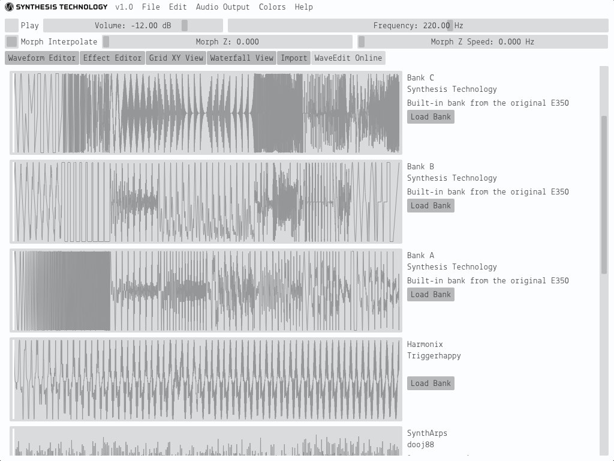

WaveEdit is a cross-platform (Mac/Windows/Linux) wavetable and bank editor designed for the Synthesis Technology E370 Quad Morphing VCO and E352 Cloud Terrarium VCO Eurorack synthesizer modules. It was developed by Andrew Belt for Synthesis Technology as a stretch goal of the E370 Kickstarter.
WaveEdit is available for free download at http://synthtech.com/waveedit.
In WaveEdit and the Synthesis Technology E370 and E352 modules, you can load a bank of wavetables and morph/interpolate between them as they cycle at a particular frequency.
In Z mode, all 64 wavetables are positioned on a line, and the Z parameter interpolates wavetables from wave 0 to wave 63. In XY mode, the wavetables are positioned on an 8x8 grid and interpolated in 2D.
There are several methods for creating a bank of wavetables in WaveEdit. You may combine any of these methods in unique ways to create your own banks.
Once you are satisfied with your bank using the bank visualization pages or audio preview, you can save it as a WAV file and load it by the E370 and E352 VCOs with a microSD card. You can share your favorite banks by submitting them to the WaveEdit Online database.
At any time while using the program, you may preview the bank you are editing using the audio preview at the top of the user interface. If you have multiple audio devices on your computer, you may open the Audio Output menu item in the menu bar to select your preferred device.
Click the Play checkbox or SPACE to begin previewing. The currently selected wavetable will play in a cycle at the configured Volume and Frequency.
The Morph Z slider selects the position in Z space that is being previewed. At integer positions, the exact wavetable with an index corresponding to the exact Z value will be played. At numbers between integers, you will hear a blend of nearby wavetables. The Morph Z Speed slider affects the speed that the Morph Z parameter is automatically increasing. With it, you can modulate the Z position with a low-frequency saw wave to preview all wavetables in the bank over time. When the Grid XY View is selected, these two sliders will control the Morph X and Morph Y position instead.
The Morph Interpolate checkbox enables smooth interpolation between adjacent wavetables. Disable this to use no interpolation and instead step/glitch the waveforms as you morph through the bank.
Immediately below the audio preview section are tabs which select the page of WaveEdit to be displayed.
In the Waveform Editor page, you can directly edit the samples of a wavetable, its harmonic spectrum, and the effects applied to it.
You can interact with the Waveform and Harmonic display with the mouse, using the tools listed above it. The Pencil tool allows you to draw samples and harmonics directly on the displays. The Brush tool smoothly adjusts adjacent samples depending on the amount of time the mouse is held. To adjust a single sample without modifying adjacent samples, use the Grab tool. Use the Line tool to draw a straight line by dragging and the Erase tool to set samples and harmonics to zero as you drag across them.
To the right of the tool selection, you can load a number of preset wavetables from the catalog/ subfolders.
You may customize these presets by adding WAV files with 256 samples to a subfolder in the catalog.
You may even create new subfolders, optionally prefixing the filenames with numbers to alphabetically sort them.
Below the Harmonic display are sliders to adjust the effect amount for the active wavetable. The meanings of the effects and effect buttons are described in the Effect Editor section.
The Waveform display shows dots at each of the exact sample values in the wavetable and lines for the bandlimited waveform after effects are applied. The values of the dots will be saved to the WAV file during export, but the lines will be approximately what you hear at audio frequencies. The "wiggles" are a result of the Gibbs phenomenon when applying a brickwall lowpass filter to the digital samples at the Nyquist frequency. This is why wavetables do not sound "stepped" when passed through a digital-to-analog converter.
When the Waveform display is modified, the Harmonic display will update, and vise-versa. The first harmonic (index 0) of the Harmonic display corresponds to the DC offset of the wavetable, which is its average vertical offset from zero. When editing either the Waveform or Harmonic display, you are modifying pre-effect samples. If effects are applied to the wavetable, you will see "ghost" bars in the Harmonic display, representing the harmonics after post-processing is applied.
The sidebar on the left displays which wavetable is selected. The Morph Z parameter is represented by a circle and can be dragged with the left mouse button. You can select a range of wavetables by left-clicking on the first wavetable in the desired range and Shift-clicking on the last wavetable. Right click your selection to display a context menu with options about the active wavetable or range of wavetables. To copy a selection of wavetables to a different location in the bank, Ctrl-click and drag the selection in the sidebar. Double-click on a wavetable to "lock" the Z parameter to the nearest wavetable index.
In the Effect Editor page, you can modify in bulk the effect magnitudes of all wavetables in a bank.
For each effect, you can increase/decrease the average value of the effect magnitudes of all wavetables at once using the Average slider. Beneath it, the actual magnitudes of the effect for each of the wavetables are shown in a bar display. You can edit this bar display much like in the Harmonic Editor, using the editing tools at the top of the page. The effects are as follows.
At the bottom of the page (and on the bottom of the Waveform Editor page), a number of buttons can change the state of the wavetables' effects.
After all effects are applied to each wavetable, the post-processor checks that the values are between -1 and 1 and clips values outside that range. Adjusting the gains or using the Normalize feature can prevent this from happening.
The Grid XY View page allows you to visualize and interact with the bank in two dimensions, using XY coordinates instead of Z.
While on this page, the audio preview switches to XY mode and the Morph sliders allow you to change the X and Y morphing position. The grid allows you to interact with the bank in exactly the same way as in the sidebar of the Waveform Editor page. You can select a wavetable or range of wavetables, copy them to a different position, right-click on the grid, and clear, randomize, and copy/paste wavetables.
The Waterfall View page allows you to visualize all wavetables simultaneously in Z morphing mode.
The Scale slider adjusts the vertical exaggeration of the waterfall plot, and the Angle slider rotates the plot in 3D. You can click and drag on the waterfall plot to set the Z morphing position and right-click a wave for a context menu.
The Import page is useful for creating banks based on audio files you may have in your collection.
To import an audio file, click Browse near the top. Only WAV files can be selected, and they must be a reasonable length, approximately between 32 and 16,000,000 samples Once loaded, the waveform of the audio file will appear in the Imported Audio Preview display. The Bank Preview displays all 64 consecutive wavetables in the bank. You can click and drag the Imported Audio Preview and Bank Preview waveforms to re-align the file, resulting in a change to the Offset parameter, explained below. Before importing the file to your current bank, you can modify the following parameters to change the scaling and behavior of the file.
You can mix the imported audio into your existing bank with the following methods.
Finally, click Import to finalize the parameters to continue working on the bank in other pages, or Clear to unload the audio and start over.
The WaveEdit Online page allows you to download banks created by others and share your own on an online database.

The WaveEdit Online database stores entire banks which users have shared to the public.
You can scroll through the pages of banks, or search using keywords in the search box. To try a bank you are interested in, click Load Bank. Note that this replaces the current bank, although you can undo the action with Edit > Undo. After loading a bank, you can preview it without leaving the WaveEdit Online page using the Morph Z and Morph Z Speed sliders in the audio preview as usual.
If you would like to share your currently-loaded bank with others, click Upload Current Bank. A popup window will display with a form with Title, Author, and optional Notes text boxes. After clicking Upload, the bank will be sent to the server and will appear in the list after it has been approved by a WaveEdit Online moderator. Note that by uploading your bank, you agree to release the bank into the public domain (CC0 license).
The most efficient way to use WaveEdit is with a combination of mouse actions and key commands. Many of these key commands are listed in the menu bar and context menu, but here is a complete list for your convenience.
| Key Command | Mac | Windows / Linux |
|---|---|---|
| New Bank | Cmd+N | Ctrl+N |
| Open Bank | Cmd+O | Ctrl+O |
| Save Bank | Cmd+S | Ctrl+S |
| Save Bank As | Cmd+Shift+S | Ctrl+Shift+S |
| Quit | Cmd+Q | Ctrl+Q |
| Undo | Cmd+Z | Ctrl+Z |
| Redo | Cmd+Shift+Z | Ctrl+Shift+Z |
| Select All Waves | Cmd+A | Ctrl+A |
| Copy Wave | Cmd+C | Ctrl+C |
| Cut Wave | Cmd+X | Ctrl+X |
| Paste Wave | Cmd+V | Ctrl+V |
| Clear Wave | Delete/Backspace | Delete |
| Randomize Effects | R | R |
| Toggle Preview Audio | Space | Space |
| Navigate Bank/Grid | Up/Down/Left/Right | Up/Down/Left/Right |
| Waveform Editor | 1 | 1 |
| Effect Editor | 2 | 2 |
| Grid XY View | 3 | 3 |
| Waterfall View | 4 | 4 |
| Import | 5 | 5 |
| WaveEdit Online | 6 | 6 |